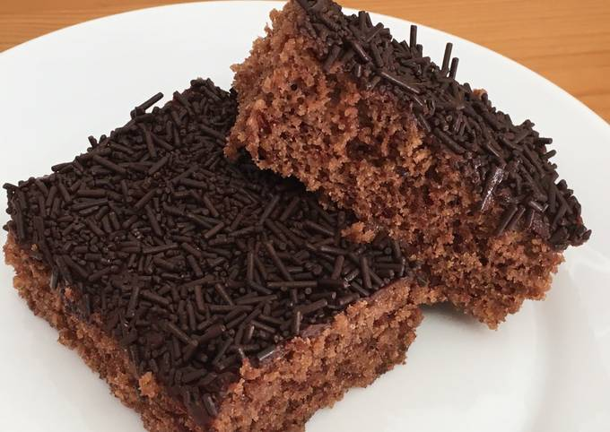

Bolo de chocolate

Ingredientes
Massa
- 1 1/2 xícara (chá) de farinha de trigo (210 g)
- 1 xícara (chá) de açúcar (180 g)
- 1/2 xícara (chá) de chocolate em pó (50 g)
- 1/2 xícara (chá) de água (120 ml)
- 1/4 xícara (chá) de óleo (60 ml)
- 4 ovos
- 1 colher (sopa) de fermento químico (15 g)
Calda
- 1/2 xícara (chá) de leite (120 ml)
- 1 colher (sobremesa) de essência de baunilha (10 ml)
Cobertura
- 1/3 xícara (chá) de chocolate meio amargo ou ao leite picado (100 g)
- 1/2 xícara (chá) de creme de leite (100 g)
- Chocolate granulado QB
Modo de preparo
Massa
- Misturar todos os ingredientes até formar uma massa homogênea.
- Assar a 180º C por 35 a 45 minutos.
Calda
- Misturar o leite e a baunilha.
- Furar o bolo com um garfo ou uma faca e despejar a calda por cima do bolo ainda quente.
Cobertura
- Levar ao microondas o chocolate com o creme de leite, mexendo em intervalos de 30 segundos, até formar uma ganache lisa.
- Cobrir o bolo com a ganache e levar para resfriar. Finalizar salpicando com chocolate granulado.